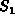
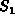
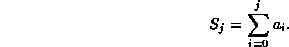
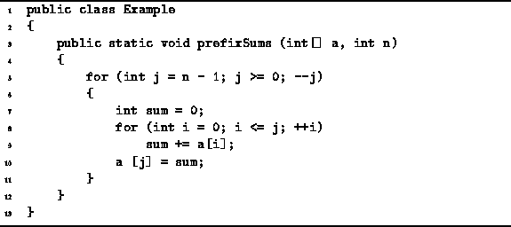
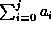
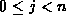
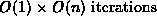
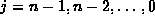
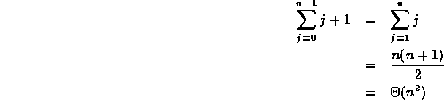
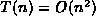

Data Structures and Algorithms
with Object-Oriented Design Patterns in Java
Data Structures and Algorithms
with Object-Oriented Design Patterns in Java
In this section, we will determine a tight big-oh bound
on the running time of a program to compute the series of sums
 , , ...,
, , ...,  , where
, where

An algorithm to compute this series of summations
is given in Program  .
Table summarizes the running time calculation.
.
Table summarizes the running time calculation.

Program: Program to compute  for .
| statement | time |
| 5a | O(1) |
| 5b |  |
| 5c | |
| 7 | |
| 8a | |
| 8b | |
| 8c | |
| 9 | |
| 10 | |
| TOTAL | |
Usually the easiest way to analyze program which contains nested loops
is to start with the body of the inner-most loop.
In Program ,
the inner-most loop comprises lines 8 and 9.
In all, a constant amount of work is done--this includes the loop body (line 9),
the conditional test (line 8b) and
the incrementing of the loop index (line 8c).
For a given value of j, the inner-most loop is done a total j+1 times. And since the outer loop is done for , in the worst case, the inner-most loop is done n times. Therefore, the contribution of the inner loop to the running time of one iteration of the outer loop is O(n).
The rest of the outer loop (lines 5, 7 and 10)
does a constant amount of work in each iteration.
This constant work is dominated by the O(n) of the inner loop.
The outer loop is does exactly n iterations.
Therefore, the total running time of the program is  .
.
But is this a tight big oh bound? We might suspect that it is not, because of the worst-case assumption we made in the analysis concerning the number of times the inner loop is executed. The inner-most loop is done exactly j+1 times for . However, we did the calculation assuming the inner loop is done O(n) times, in each iteration of the outer loop. Unfortunately, in order to determine whether our answer is a tight bound, we must determine more precisely the actual running time of the program.
However, there is one approximate calculation that we can easily make. If we observe that the running time will be dominated by the work done in the inner-most loop, and that the work done in one iteration of the inner-most loop is constant, then all we need to do is to determine exactly the number of times the inner loop is actually executed. This is given by:

Therefore, the result  is a tight, big-oh bound
on the running time of Program .
 Copyright © 1998 by Bruno R. Preiss, P.Eng. All rights reserved.
Copyright © 1998 by Bruno R. Preiss, P.Eng. All rights reserved.